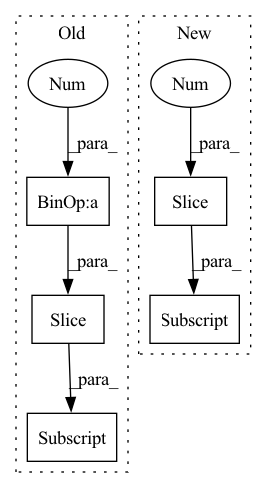

Pattern ID :30354

Before Change
def loss(self, feed_dict, predictions):
if self.stage == 1:
real_batch_size = feed_dict["batch_size"]
pos_pred, neg_pred = predictions[:real_batch_size * 2], predictions[real_batch_size * 2:]
loss = self.kg_loss(pos_pred, neg_pred, utils.numpy_to_torch(np.ones(real_batch_size * 2)))
else:
loss = BaseModel.loss(self, feed_dict, predictions)
return loss
After Change
def loss(self, predictions):
if self.stage == 1:
batch_size = predictions.shape[0]
pos_pred, neg_pred = predictions[:, :2].flatten(), predictions[:, 2:].flatten()
loss = self.kg_loss(pos_pred, neg_pred, utils.numpy_to_torch(np.ones(batch_size * 2)))
else:
loss = super().loss(predictions)
In pattern: SUPERPATTERN
Frequency: 4
Non-data size: 5
Instances
Fragment ID: 89828506
Project Name: thuwangcy/rechorus
Commit Name: c421e8da6805aa2e0ec0e91c0930bd9040058661
Time: 2020-06-27
Author: THUwangcy@gmail.com
File Name: src/models/Chorus.py
M Class Name: Chorus
N Class Name: Chorus
M Method Name: loss(2)
N Method Name: loss(3)
M Parent Class: SLRC
N Parent Class: SLRC
M File Name: src/models/Chorus.py
N File Name: src/models/Chorus.py
M Start Line: 145
M End Line: 151
N Start Line: 139
N End Line: 143
'>
Before Change
decoder_input_ids.shape[1]),
dtype=torch.float).to(self.device)
for t_index in range(self.max_seq_length-1):
perm_mask[:, -t_index, -(self.max_seq_length-1):-t_index] = 0.0
perm_mask = perm_mask.contiguous()
target_mapping = torch.zeros((input_ids.shape[0], decoder_input_ids.shape[1], decoder_input_ids.shape[1]),
dtype=torch.float).to(self.device)
After Change
perm_mask = perm_mask.triu(diagonal=1)
target_ones = torch.ones(input_ids.shape[1] - 1).to(self.device)
target_ones = target_ones.diag(1)[:-1]
target_mapping = target_ones.expand(input_ids.shape[0], -1, -1)
outputs = self.decoder(input_ids, attention_mask=attn_masks, perm_mask=perm_mask, target_mapping=target_mapping)
'>
Fragment ID: 89828504
Project Name: rucaibox/textbox
Commit Name: 53c76331ad0c943d52e3310affd25d0e505eb830
Time: 2021-01-19
Author: 1020139164@qq.com
File Name: textbox/model/LM/xlnet.py
M Class Name: XLNet
N Class Name: XLNet
M Method Name: calculate_loss(4)
N Method Name: calculate_loss(3)
M Parent Class: UnconditionalGenerator
N Parent Class: UnconditionalGenerator
M File Name: textbox/model/LM/xlnet.py
N File Name: textbox/model/LM/xlnet.py
M Start Line: 90
M End Line: 113
N Start Line: 72
N End Line: 111
'>
Before Change
self.n_blocks = n_blocks
// remove first skip with same spatial resolution
encoder_channels = encoder_channels[1 - n_blocks:]
encoder_channels = encoder_channels[::-1]
// computing blocks input and output channels
head_channels = encoder_channels[0]
After Change
head_channels = encoder_channels[0]
in_channels = decoder_channels
skip_channels = encoder_channels[1:]
out_channels = decoder_channels[1:]
self.center = CenterBlock(head_channels, head_channels, use_batchnorm=use_batchnorm) if center else None
blocks = [
'>
Fragment ID: 89828508
Project Name: eora-ai/torchok
Commit Name: 8a2018209d652806a76fb118ac3c950f06154084
Time: 2022-07-18
Author: patr982@gmail.com
File Name: src/models/necks/segmentation/unet_neck.py
M Class Name: UnetNeck
N Class Name: UnetNeck
M Method Name: __init__(7)
N Method Name: __init__(7)
M Parent Class: BaseModel
N Parent Class: BaseModel
M File Name: src/models/necks/segmentation/unet_neck.py
N File Name: src/models/necks/segmentation/unet_neck.py
M Start Line: 146
M End Line: 163
N Start Line: 146
N End Line: 162
'>
Before Change
def loss(self, feed_dict, predictions):
real_batch_size, predictions = feed_dict["batch_size"], predictions.flatten()
pos_pred, neg_pred = predictions[:real_batch_size * 2], predictions[real_batch_size * 2:]
loss = self.loss_function(pos_pred, neg_pred, utils.numpy_to_torch(np.ones(real_batch_size * 2)))
return loss.double()
def get_feed_dict(self, corpus, data, batch_start, batch_size, phase):
After Change
def loss(self, predictions):
batch_size = predictions.shape[0]
pos_pred, neg_pred = predictions[:, :2].flatten(), predictions[:, 2:].flatten()
loss = self.loss_function(pos_pred, neg_pred, utils.numpy_to_torch(np.ones(batch_size * 2)))
return loss
'>
Fragment ID: 89828509
Project Name: thuwangcy/rechorus
Commit Name: c421e8da6805aa2e0ec0e91c0930bd9040058661
Time: 2020-06-27
Author: THUwangcy@gmail.com
File Name: src/models/CFKG.py
M Class Name: CFKG
N Class Name: CFKG
M Method Name: loss(2)
N Method Name: loss(3)
M Parent Class: BaseModel
N Parent Class: BaseModel
M File Name: src/models/CFKG.py
N File Name: src/models/CFKG.py
M Start Line: 52
M End Line: 56
N Start Line: 48
N End Line: 51